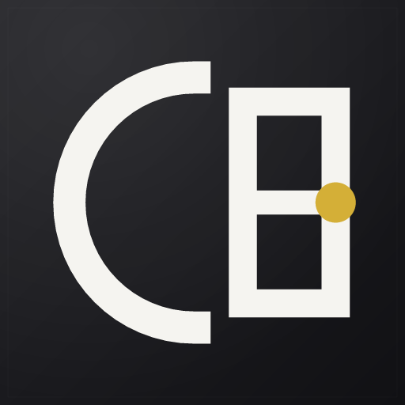
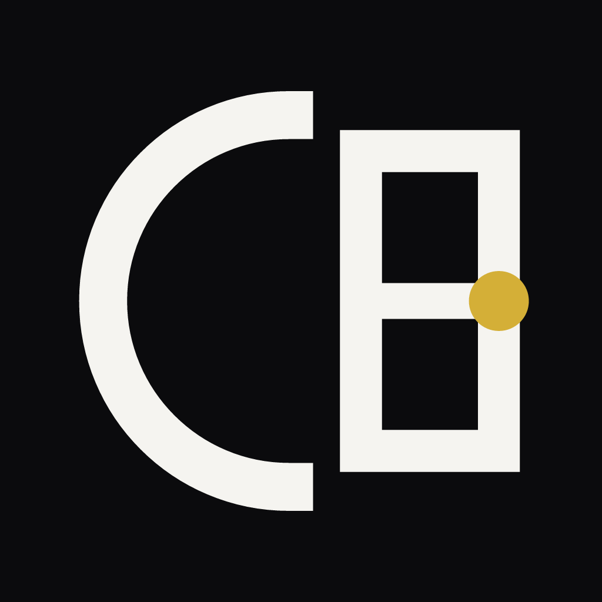
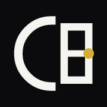
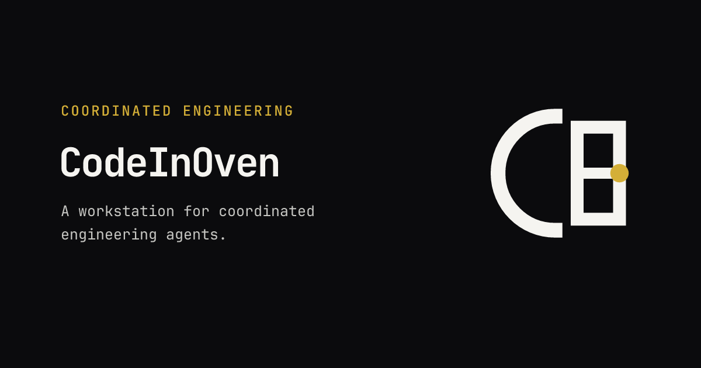

CODEINOVEN / PLATFORM ASSETS
Replacement study · platform surfaces
One mark.
Every surface.
The selected Oven Mono C/O symbol, shown at the sizes and in the contexts it would actually occupy: desktop launchers, taskbars, menu bars, browser tabs, and link previews. The C remains open; the round vessel uses a flat shelf and square gold endpoint.
Desktop application icons
PLATFORM MASKS / OPTICAL SCALE
Tray and menu bar
ONE-COLOR SYMBOL / STATE VARIANTSCropped template artwork uses a true 16 px menu-bar slot with a dedicated 2× Retina master; the system supplies its tint.
While threads are running the figure of working threads takes the exclamation's slot, on macOS only: the mark keeps its size and the figure is appended, so the menu bar item grows instead of the mark shrinking. The figures are drawn rather than typeset: one heavy stroke with square terminals and mitred corners, which is the same voice as the round C/O with its flat shelf and square gold control. Counts above 99 read as 99+. Windows keeps its plain and attention states, because its notification area draws every icon into a fixed small square.
The C/O mark stays unchanged. A clear gap separates it from a bold exclamation that matches the mark height.
64px ICO entry
64px ICO entry
These are decoded entries from the generated Windows ICOs. The taskbar rows use the real 16px image. The larger samples show the embedded 64px entry.
Browser and sharing
FAVICON / LINK PREVIEW
32 px
48 px
The production builder emits the favicon PNG and multi-size ICO from the approved master, keeping the gold endpoint in the smallest size family.

Production 1200×630 image export. The Electron renderer currently declares favicon links but no Open Graph or social image metadata.
System decisions
OVEN MONO MARK / ADAPT THE EXPORTUse the gold point as the only color accent on a dark field. Let macOS apply its native rounded mask; keep the Windows tile geometry square and edge-safe.
Drop color for platform template rendering and protect the silhouette with slightly heavier optical strokes at tiny sizes. Set attention apart with a clear gap and a full-height exclamation, and put the working-thread figure in that same slot so one element answers what the icon is doing now.
Use a purpose-drawn favicon at 16 px. Keep social artwork at a wide 1200:630 ratio and pair the mark with the CodeInOven wordmark and a short product statement.